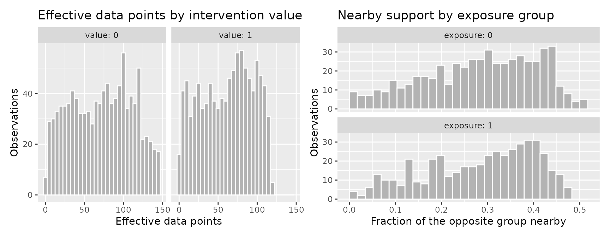
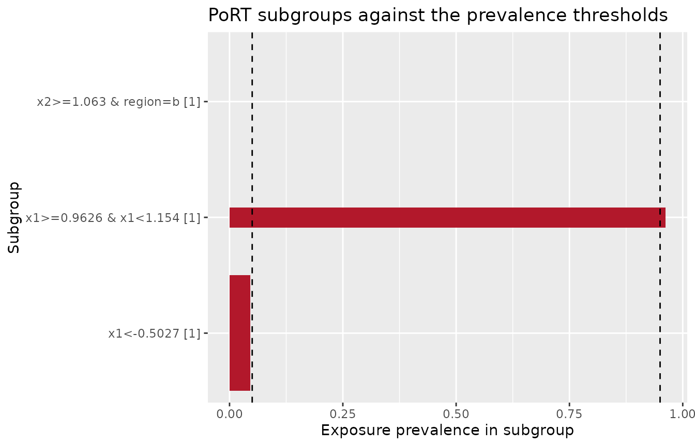
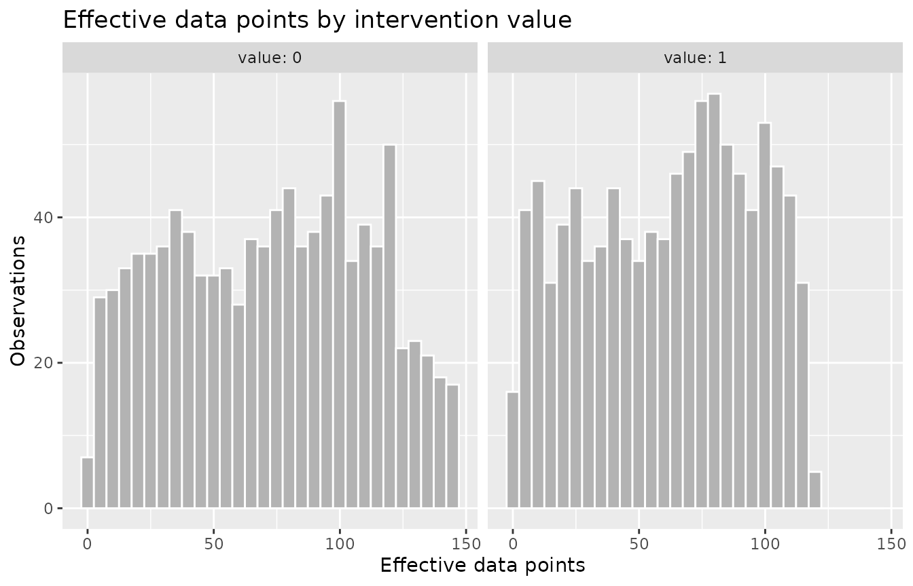
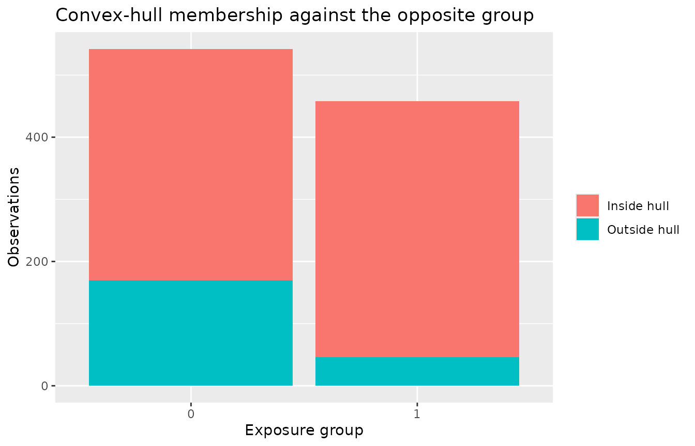

positively provides diagnostics for positivity violations and extrapolation in causal inference. Causal effect estimates rest on the positivity assumption: every unit must have a non-zero probability of receiving each level of the exposure within every stratum of the covariates. Where that probability is zero, or close to it, you face one of two problems: 1) for an exposure-based model, like Inverse Probability Weighting, you get a biased and unstable estimate or 2) for an outcome-based model, like a regression model, an estimate comes from the model extrapolating rather than from observed comparisons.
Positivity violations come in two kinds, and they call for different responses. A structural violation is one where treatment is impossible for a subgroup, so no amount of additional data would fill the gap. A practical violation is one where treatment is rare in a region of covariate space, so both exposure levels remain observed overall but the propensity approaches zero or one in the tails. Structural violations usually mean the causal question has to be narrowed to the population where the exposure is possible. Practical violations are a finite-sample problem that shows up as unstable weights and inflated variance, and they can sometimes be managed by trimming, truncation, or a change of estimand. Distinguishing the two is the first task a positivity diagnostic faces, so the methods in positively locate the covariate regions responsible for a violation in addition to measuring its overall severity.
Setup
positively includes a small simulated dataset,
pos_violations, with two known problems planted in it so
that a diagnostic can be checked against ground truth. It has a binary
exposure, two numeric covariates x1 and
x2, and a two-level factor region.
pos_violations
#> # A tibble: 1,000 × 4
#> exposure x1 x2 region
#> <int> <dbl> <dbl> <fct>
#> 1 1 0.982 -0.0517 a
#> 2 1 0.469 -0.499 a
#> 3 0 -0.108 -0.903 a
#> 4 0 -0.213 -0.372 a
#> 5 1 1.16 -0.188 a
#> 6 1 1.29 -0.737 a
#> 7 1 0.535 -0.876 b
#> 8 0 -0.127 -1.40 b
#> 9 0 -1.22 0.395 b
#> 10 0 -1.12 -0.629 b
#> # ℹ 990 more rowsThe two planted violations are documented in
?pos_violations. The first is structural: no subject with
region == "b" and x2 > 1 is ever exposed,
because the true propensity is zero there. The second is practical:
exposure depends steeply on x1, so the fitted propensity
drops below 0.01 in the lower tail of x1 and rises above
0.99 in the upper tail, while both exposure levels stay observed across
the sample as a whole. A good set of diagnostics should recover both,
and distinguish the empty subgroup from the near-empty tails.
Running check_positivity()
check_positivity() detects the exposure type, or uses
the one you declare in exposure_type, then checks
positivity with the set of diagnostics appropriate to that type,
composing the individual check_*() functions with their
defaults. It collects each diagnostic’s output into a container you can
read and plot. You give it the data, the exposure column, and the
covariates. The covariates are required, with no default, so that
outcome columns are never swept in by accident.
vignette("continuous-exposures") covers when declaring the
type is the right call.
check <- check_positivity(pos_violations, exposure, c(x1, x2, region))
#> ℹ Treating `.exposure` as binaryThe message reports that the exposure was detected as binary. For a
binary exposure the default set is three diagnostics: effective data
points (edp), positivity regression trees
(port), and an extrapolation check
(extrapolation). Printing the container gives a report.
check
#>
#> ── Positivity check ────────────────────────────────────────────────────────────
#> Exposure: "exposure" (binary); 1000 observations; covariates x1, x2, and region
#>
#> ── port ────────────────────────────────────────────────────────────────────────
#> 231 subgroups reported, 3 with low support
#> Rule: prevalence outside [0.05, 0.95] among subgroups of at least 5% of the
#> sample
#>
#> ── extrapolation ───────────────────────────────────────────────────────────────
#> Geometric variability 0.144
#> 999 of 1000 have an opposite-exposure unit within one geometric variability;
#> 784 of 1000 fall in the opposite hull
#>
#> ── edp ─────────────────────────────────────────────────────────────────────────
#> Data variant over 2 intervention values; edp 0.013 to 144.662
#>
#> ℹ `sniff_violations()` for what was found, `$port` to extract a diagnostic,
#> `summary()` for every statistic.The header states the exposure, its type, the sample size, and the covariates once for the whole run. Each diagnostic then gets a section, headed by the name you extract it with, reading what that diagnostic found. Diagnostics that found something come first, and the rest follow in the order they were requested.
The port section reports how many covariate subgroups it
examined and how many read as low support, and spells out the rule that
produced the count rather than leaving you to assemble it from the
parameters. The extrapolation section reports the geometric
scale it judges nearness by, then how many units have an
opposite-exposure unit within one of it and how many fall inside the
opposite group’s convex hull. The edp section reports the
range of effective data points across the intervention values. The
footer names what to do next.
Reading the container
summary() summarizes the container as a whole. It
reports one row per statistic per diagnostic: the value the
diagnostic computed and, for the statistics it pairs with a cut, the
threshold behind that value. A threshold is stated in the
units of the quantity it cuts, which are not always the units of the
value beside it. The port count of low-support subgroups
sits beside beta, a prevalence, because the cut was applied
to each subgroup’s prevalence in turn and the count is what came back.
An NA means the overview has no one number to show, not
that the diagnostic read nothing against anything.
summary(check)
#> # A tibble: 8 × 4
#> diagnostic statistic value threshold
#> <chr> <chr> <dbl> <dbl>
#> 1 edp n_values 2 NA
#> 2 edp edp_min 0.0128 NA
#> 3 edp edp_max 145. NA
#> 4 port n_subgroups 231 NA
#> 5 port n_low_support 3 0.05
#> 6 extrapolation mean_frac_nearby 0.284 NA
#> 7 extrapolation prop_supported 0.999 0.144
#> 8 extrapolation prop_in_hull 0.784 NAsniff_violations() answers the other question: not what
every diagnostic measured, but what any of them found. It returns one
row per finding across the whole run, with the number behind each row in
the threshold column where there is one, so a reader can
see that a cut came from an argument they passed. A convex-hull test has
no number behind it, so its row states NA. A diagnostic
that found nothing contributes no rows, so an empty table is an answer
rather than a failure.
sniff_violations(check)
#> # A tibble: 5 × 7
#> diagnostic scope label n statistic value threshold
#> <chr> <chr> <chr> <int> <chr> <dbl> <dbl>
#> 1 port subgroup x1<-0.5027 305 prevalen… 0.0459 0.05
#> 2 port subgroup x1>=0.9626 & x1<1.154 53 prevalen… 0.962 0.05
#> 3 port subgroup x2>=1.063 & region=b 69 prevalen… 0 0.05
#> 4 extrapolation overall beyond one geometric … 1 prop_sup… 0.999 0.144
#> 5 extrapolation overall outside the opposite-… 216 prop_in_… 0.784 NAscope says what a row is about, and rows of different
kinds are not comparable. A subgroup row names a covariate
region you can act on, an overall row is a reading taken
across the whole run, and a unit row is one row of a
distribution whose aggregate is the reading. Unit rows are available on
request, and they are not included by default because a diagnostic
reporting per unit produces far more rows than one reporting per
subgroup.
sniff_violations(check, scope = "unit")
#> # A tibble: 217 × 7
#> diagnostic scope label n statistic value threshold
#> <chr> <chr> <chr> <int> <chr> <dbl> <dbl>
#> 1 extrapolation unit beyond one geometric va… NA gower_min 0.186 0.144
#> 2 extrapolation unit outside the opposite-ex… NA in_hull NA NA
#> 3 extrapolation unit outside the opposite-ex… NA in_hull NA NA
#> 4 extrapolation unit outside the opposite-ex… NA in_hull NA NA
#> 5 extrapolation unit outside the opposite-ex… NA in_hull NA NA
#> 6 extrapolation unit outside the opposite-ex… NA in_hull NA NA
#> 7 extrapolation unit outside the opposite-ex… NA in_hull NA NA
#> 8 extrapolation unit outside the opposite-ex… NA in_hull NA NA
#> 9 extrapolation unit outside the opposite-ex… NA in_hull NA NA
#> 10 extrapolation unit outside the opposite-ex… NA in_hull NA NA
#> # ℹ 207 more rowsTo pull a single diagnostic out of the container, name it with
$ or [[. Its tidy() method
returns that diagnostic’s own tidy tibble, one row per unit or per
subgroup depending on the method, and its glance() method
returns the wide row of statistics the overview drew on.
tidy(check$port)
#> # A tibble: 231 × 7
#> subgroup description exposure_level n proportion prevalence low_support
#> <chr> <chr> <chr> <int> <dbl> <dbl> <lgl>
#> 1 x1 x1<-0.5027 1 305 0.305 0.0459 TRUE
#> 2 x1 x1>=-0.3166 … 1 11 0.011 0 FALSE
#> 3 x1 x1>=-0.3614 … 1 19 0.019 0.105 FALSE
#> 4 x1 x1>=-0.2511 … 1 9 0.009 0 FALSE
#> 5 x1 x1>=-0.1998 … 1 9 0.009 0 FALSE
#> 6 x1 x1>=-0.2329 … 1 16 0.016 0.375 FALSE
#> 7 x1 x1>=-0.2817 … 1 13 0.013 0.538 FALSE
#> 8 x1 x1>=-0.475 &… 1 9 0.009 0 FALSE
#> 9 x1 x1>=-0.4261 … 1 14 0.014 0.214 FALSE
#> 10 x1 x1>=-0.5027 … 1 11 0.011 0.455 FALSE
#> # ℹ 221 more rowsautoplot() draws the whole container as a panel of each
diagnostic’s default view. The panel needs the patchwork package. Each
view keeps the size the panel gives it, so a panel reads well for
diagnostics whose default view is compact. PoRT reports a couple of
hundred subgroups here, and its default chart is worth a figure of its
own, so the panel below holds the other two.
compact <- check_positivity(
pos_violations,
exposure,
c(x1, x2, region),
diagnostics = c("edp", "extrapolation")
)
autoplot(compact)
Naming a diagnostic draws that one alone, and arguments go with the
name, so autoplot(check, "port", low_support_only = TRUE)
draws the PoRT chart restricted to its low-support subgroups. Naming a
diagnostic composes nothing, so it works without patchwork.
Each diagnostic can also be called directly. Calling
check_port(), check_edp(), or
check_extrapolation() directly returns the same diagnostic
object that check_positivity() composed, and each object
carries its own plot method through autoplot(). The
sections below call the individual functions so that we can plot and
interpret each diagnostic in turn.
PoRT: locating the subgroups
The positivity regression tree of Danelian et al. (2023) grows a shallow tree to find subgroups where one exposure level is rare or absent. It is the most direct diagnostic for the structural-versus-practical distinction, because it reports each problem as a human-readable rule over the covariates.
port <- check_port(pos_violations, exposure, c(x1, x2, region))
#> ℹ Treating `.exposure` as binary
port
#>
#> ── PoRT subgroups ──────────────────────────────────────────────────────────────
#> Exposure: "exposure" (binary)
#> Observations: 1000
#> Reading rule: alpha = 0.05, gamma = 2
#> Prevalence threshold beta: 0.05
#> Subgroups: 231 reported, 3 with low supportThe low_support column marks subgroups meeting the
algorithm’s published rule: a prevalence below beta or
above 1 - beta among subgroups at least alpha
of the sample. Filtering to the low-support rows shows what PoRT
found.
tidy(port) |>
filter(low_support) |>
select(description, n, prevalence, low_support)
#> # A tibble: 3 × 4
#> description n prevalence low_support
#> <chr> <int> <dbl> <lgl>
#> 1 x1<-0.5027 305 0.0459 TRUE
#> 2 x1>=0.9626 & x1<1.154 53 0.962 TRUE
#> 3 x2>=1.063 & region=b 69 0 TRUEPoRT recovers both planted violations and describes them in the
covariates. The rule x2 >= ... & region = b has an
exposure prevalence of exactly zero: this is the structural subgroup,
the cell that is empty by construction. The two x1 rules,
one in the lower tail with prevalence near 0.05 and one in the upper
tail with prevalence near 0.96, are the practical near-violation, where
exposure is almost but not entirely determined by x1. The
autoplot() method draws the reported subgroups as a bar
chart of prevalence, with dashed reference lines at beta
and 1 - beta and the low-support subgroups highlighted. The
default draws every reported subgroup;
low_support_only = TRUE restricts the chart to the
low-support subgroups.
autoplot(port, low_support_only = TRUE)
Effective data points: how much support surrounds each intervention
The effective-data-points diagnostic of Ring and Schomaker (2026) measures, for each unit moved to a candidate exposure value, how much of the observed sample lies nearby in covariate space. It sums a product kernel over the data, so the result runs from zero, meaning no observed support, up to the sample size. For a binary exposure the candidate values are the two levels, 0 and 1.
edp <- check_edp(pos_violations, exposure, c(x1, x2, region))
#> ℹ Treating `.exposure` as binary
tidy(edp)
#> # A tibble: 2,000 × 3
#> .id value edp
#> <int> <int> <dbl>
#> 1 1 0 43.7
#> 2 2 0 77.3
#> 3 3 0 99.2
#> 4 4 0 129.
#> 5 5 0 33.3
#> 6 6 0 22.7
#> 7 7 0 46.0
#> 8 8 0 47.5
#> 9 9 0 97.3
#> 10 10 0 81.8
#> # ℹ 1,990 more rowsEffective data points are a relative measure. They are meaningful
when compared across units or across candidate values for a fixed
covariate set, not against a universal threshold. Units in a thinly
supported region carry a low value at the exposure level they rarely
receive, because few observed neighbors surround the intervened-on
point. The autoplot() method shows the distribution of
effective data points, faceted by candidate exposure value; the left
tail near zero is the set of units with little observed support under
that intervention.
autoplot(edp, type = "histogram")
The planted regions make the comparison concrete. The following
labels each unit by the planted problem it belongs to: the structural
subgroup is region == "b" with x2 > 1, and
the practical tails are the outer five percent of x1. The
labels are keyed by .id, the row identifier carried by the
per-unit results of check_edp() and
check_extrapolation(), so they can be joined to both sets
of results below.
planted <- pos_violations |>
mutate(
.id = row_number(),
planted = case_when(
region == "b" & x2 > 1 ~ "structural",
x1 < quantile(x1, 0.05) | x1 > quantile(x1, 0.95) ~ "x1 tail",
.default = "elsewhere"
)
) |>
select(.id, planted)
planted |>
count(planted)
#> # A tibble: 3 × 2
#> planted n
#> <chr> <int>
#> 1 elsewhere 832
#> 2 structural 76
#> 3 x1 tail 92Comparing effective data points at the exposed level across those labels shows the thin support directly.
tidy(edp) |>
filter(value == 1) |>
left_join(planted, by = ".id") |>
group_by(planted) |>
summarize(edp = median(edp))
#> # A tibble: 3 × 2
#> planted edp
#> <chr> <dbl>
#> 1 elsewhere 73.3
#> 2 structural 21.1
#> 3 x1 tail 11.0The median unit elsewhere in the sample has about 73 effective data
points under the exposed intervention. The planted regions carry a
fraction of that: about 21 in the structural subgroup and about 11 in
the x1 tails, the same regions PoRT reported as rules.
Extrapolation: distance and the convex hull
The extrapolation check follows the logic of King and Zeng (2006): a unit whose covariate profile has no near neighbor in the opposite exposure group can only be compared by extrapolating the model beyond the observed data. It measures nearness with a Gower distance that handles numeric and categorical covariates together, and, when the covariate count is small enough, tests whether each unit falls inside the convex hull of the opposite group.
extrapolation <- check_extrapolation(pos_violations, exposure, c(x1, x2, region))
tidy(extrapolation)
#> # A tibble: 1,000 × 7
#> .id exposure frac_nearby gower_min gower_mean in_hull low_support
#> <int> <int> <dbl> <dbl> <dbl> <lgl> <lgl>
#> 1 1 1 0.325 0.0223 0.291 TRUE FALSE
#> 2 2 1 0.380 0.00566 0.276 TRUE FALSE
#> 3 3 0 0.386 0.00837 0.255 TRUE FALSE
#> 4 4 0 0.426 0.00384 0.247 TRUE FALSE
#> 5 5 1 0.297 0.0113 0.302 TRUE FALSE
#> 6 6 1 0.220 0.0281 0.325 TRUE FALSE
#> 7 7 1 0.284 0.0197 0.304 TRUE FALSE
#> 8 8 0 0.321 0.00920 0.302 TRUE FALSE
#> 9 9 0 0.223 0.0323 0.330 FALSE FALSE
#> 10 10 0 0.269 0.0286 0.322 TRUE FALSE
#> # ℹ 990 more rowssummary() aggregates the results by exposure group. It
reports, for each group, the average distance to the nearest
opposite-group unit, the share of units with a neighbor within one
geometric variability, and the share inside the opposite group’s
hull.
summary(extrapolation)
#> # A tibble: 2 × 5
#> exposure n mean_gower_min prop_supported prop_in_hull
#> <int> <int> <dbl> <dbl> <dbl>
#> 1 0 542 0.0269 0.998 0.686
#> 2 1 458 0.0191 1 0.900The same planted labels trace the extrapolation results to the unit level.
tidy(extrapolation) |>
left_join(planted, by = ".id") |>
group_by(planted) |>
summarize(
frac_nearby = median(frac_nearby),
in_hull = mean(in_hull)
)
#> # A tibble: 3 × 3
#> planted frac_nearby in_hull
#> <chr> <dbl> <dbl>
#> 1 elsewhere 0.330 0.862
#> 2 structural 0.180 0.632
#> 3 x1 tail 0.0980 0.207The x1 tails are the extreme case on both measures. The
median tail unit has about a tenth of the opposite group nearby, against
a third elsewhere, and about a fifth of tail units fall inside the
opposite group’s hull, against 86 percent elsewhere. The structural
subgroup sits between the two: its units have fewer opposite-group
neighbors than the rest of the sample, but the hull test runs on the
numeric covariates alone, so a subgroup defined partly by
region separates less sharply here than in PoRT, which
searches the categorical covariate directly. The
type = "distribution" plot shows the distribution of
frac_nearby within each exposure group. Most units carry a
third to a half of the opposite group nearby, and the thin left tail is
the handful with almost none.
autoplot(extrapolation, type = "distribution")
When the convex-hull test runs, the type = "hull" plot
shows how many units of each group fall inside the opposite group’s
hull. Units outside the hull require extrapolation by construction.
autoplot(extrapolation, type = "hull")
The three diagnostics tell one story about the planted problems, each
at its own resolution. PoRT names the structural subgroup and the
practical tails as explicit rules. Effective data points shrink to a
fraction of the sample median in both regions under the exposed
intervention. The extrapolation check places the x1 tails
far from any opposite-group neighbor and largely outside the hull, and
it places the structural subgroup below the rest of the sample on nearby
support, with the caveat that its hull test reads only the numeric
covariates.
Choosing diagnostics beyond the defaults
The default set depends on the exposure type. A categorical exposure
drops the extrapolation check; a continuous exposure adds hat values and
highest density regions and categorizes the exposure for PoRT. You can
also request an explicit subset with the diagnostics
argument and tune any method through args, a named list of
per-method option lists.
check_positivity(
pos_violations,
exposure,
c(x1, x2, region),
diagnostics = "port",
args = list(port = list(alpha = 0.1))
)
#> ℹ Treating `.exposure` as binary
#>
#> ── Positivity check ────────────────────────────────────────────────────────────
#> Exposure: "exposure" (binary); 1000 observations; covariates x1, x2, and region
#>
#> ── port ────────────────────────────────────────────────────────────────────────
#> 233 subgroups reported, 1 with low support
#> Rule: prevalence outside [0.05, 0.95] among subgroups of at least 10% of the
#> sample
#>
#> ℹ `sniff_violations()` for what was found, `$port` to extract a diagnostic,
#> `summary()` for every statistic.Two diagnostics are never run by check_positivity(),
because each needs something it does not have.
check_eta_bias() needs an outcome, and
check_density_ratios() needs user-supplied density ratios.
Call both directly.
The other vignettes go deeper into each area:
- Positivity for continuous exposures covers effective data points, hat values, and highest density region non-overlap, and when each one applies.
-
Identifying Violations: PoRT and sPoRT covers subgroup
trees, tuning
alpha,beta, andgamma, and the longitudinal and censoring variants. - Estimator-focused diagnostics covers ETA.Bias and g-computation extrapolation.
-
Density ratios and modified treatment policies covers
check_density_ratios()with hand-built ratios and with a fitted longitudinal model.
References
Danelian G, Foucher Y, Léger M, Le Borgne F, Chatton A (2023). Identification of in-sample positivity violations using regression trees: the PoRT algorithm.
King G, Zeng L (2006). The Dangers of Extreme Counterfactuals. Political Analysis, 14(2):131-159.
Ring C, Schomaker M (2026). A Diagnostic to Find and Help Combat Stochastic Positivity Issues, with a Focus on Continuous Treatments.